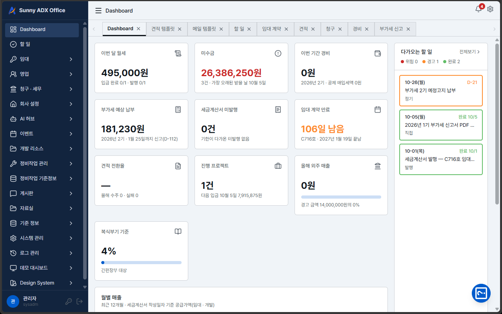
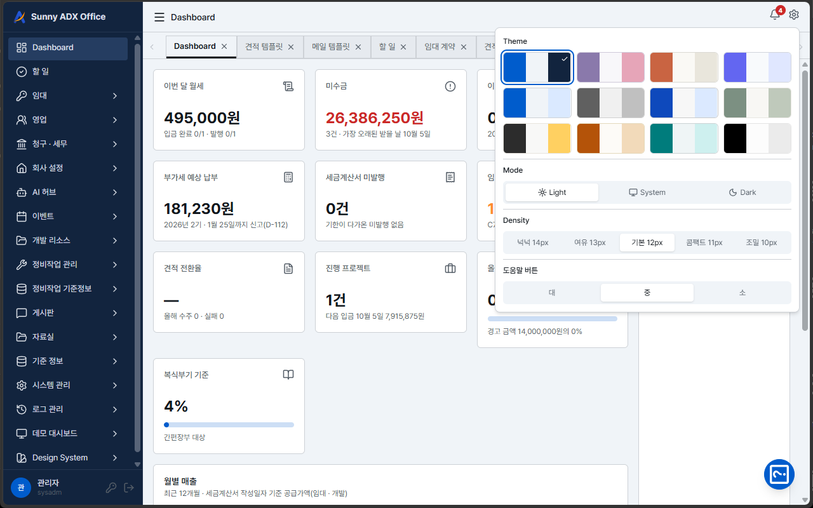
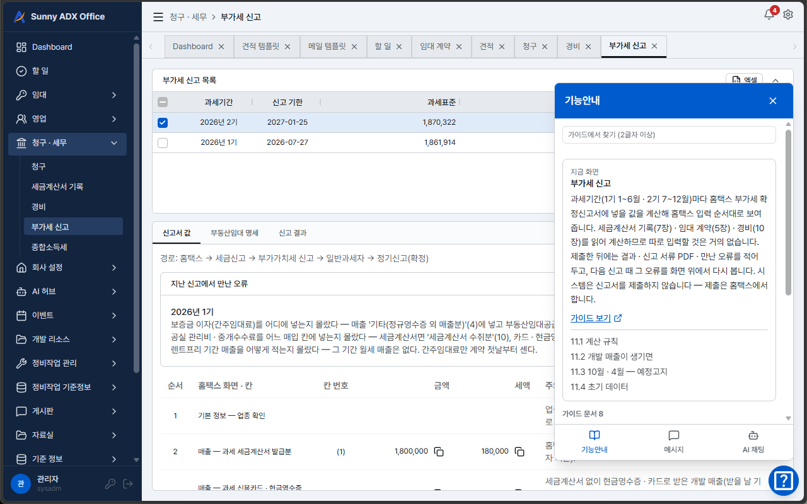
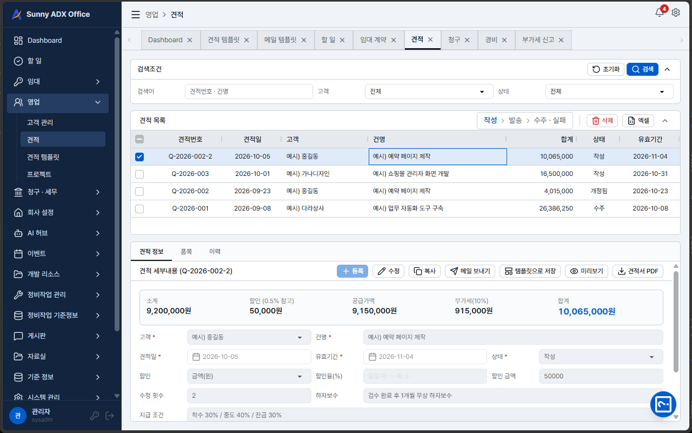
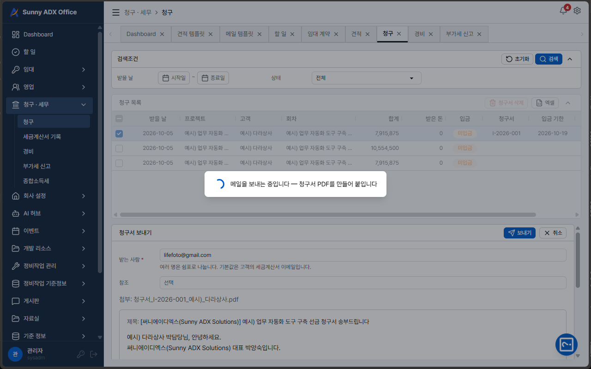

ADX Office
소규모 사업장을 위한 AI Office 솔루션 — 견적부터 수금·세금계산서까지 한곳에서 관리합니다.
문제
가까운 지인이 사업장의 견적·청구·세무 관리 문제를 가져왔습니다.
만든 것
- 고객 · 견적 · 견적서 PDF · 프로젝트 계약
- 청구 · 수금 · 세금계산서 발행 기한
- 미수금 · 올해 매출 누계 대시보드
결과
Claude Code로 조사·분석·설계·검토·개발을 혼자 4일 만에 마쳤고, 지인이 실제로 쓰기 시작했습니다.




